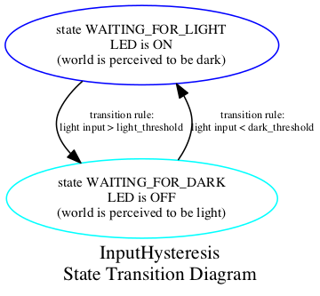

Note: this is a new exercise, please provide feedback on errors and clarity.
Understand the application of a single state variable to produce hysteresis, the time-based dependence of a system's output on present and past inputs.
Hysteresis arises in a process when internal state causes the output response to vary based on the history of the input. It can be a useful property to engineer into systems involving thresholds in order to avoid unwanted ambiguous behavior. For example, a thermostat typically turns on when the temperature drops somewhat below the target and keeps the furnace running until the temperature is somewhat above the target. This keeps the furnace from cycling on and off too rapidly.
However, the phenomenon can also interfere with control of mechanical systems. Most mechanical transmissions exhibit some degree of backlash, e.g. the slight gap between gear teeth, for which changing the direction of torque causes the contact to be lost and zero torque to be transmitted for a short displacement until load contact is re-established. The extra state variable is the relative position of the parts, which are ideally intended to have a fixed relationship. This can lead to motor chatter when trying to control an exact position with both positive and negative torques.
This example presents a simple light-responsive system which incorporates hysteresis. This might be a model for the behavior of a light-sensitive streetlight to allow it to turn off at dusk without oscillating in response to its own illumination.
This graph represents a set of discrete states modelled by the system. States are illustrated as ovals and transitions as arrows. Each state can have an associated output, in this case the LED. Transitions between states are defined by condition rules. There is no representation of time in this graph; transitions are assumed to trigger instantaneously.
You may now recognize that the switch debouncing code introduced much earlier is a specific case of a finite-state machine implementing time-based hysteresis.
Can you introduce time measurements into the state graph? Adding intermediate wait states conditioned on elapsed time would be another way to improve the hysteresis.